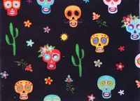
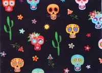
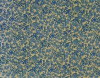
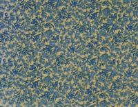
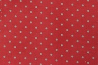
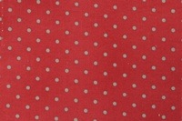

Encuentra aquí una gran variedad de estampados, telas con calaveras, animales, dibujos, geometría...Busca el estilo que mejor vaya contigo y con tu peludo y diseña tus complementos. ¡¡¡Será por telas!!!
Si quieres presumir en el parque de dispensador de bolsitas higiénicas, bolsa de chuches para los premios de tu perrete o de cualquier otro complemento, no te puedes perder la colección de telas Vintage que hemos preparado para tí.
¬°Esperamos que te gusten!
Si eres muy fan de los topitos, puedes diseñar tus complementos o los complementos para tu perro con alguna de nuestras telas de lunares .Aquí está la colección "Topitos power".


 



 

 
